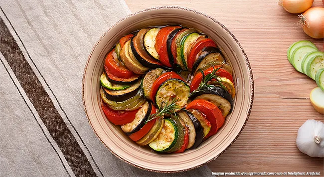

O Ratatouille é um prato clássico da culinária provençal francesa, conhecido por sua simplicidade e sabor. É um ensopado de vegetais que combina abobrinha, berinjela, pimentões e tomate, cozidos lentamente com ervas e azeite de oliva.
Ingredientes
- 1 berinjela média
- 1 abobrinha média
- 1 pimentão vermelho
- 1 pimentão amarelo
- 4 tomates maduros
- 1 cebola grande picada
- 3 dentes de alho picados
- 1/2 xícara de azeite de oliva extra virgem
- 1 colher de sopa de orégano fresco (ou 1 colher de chá de orégano seco)
- Sal e pimenta-do-reino a gosto
- Folhas de manjericão fresco para decorar
Instruções de Preparo
- Lave todos os vegetais. Fatie a berinjela, a abobrinha, os pimentões e os tomates em rodelas finas e uniformes.
- Em uma panela grande ou caçarola, aqueça o azeite e refogue a cebola e o alho picados até ficarem macios.
- Adicione os tomates em rodelas, metade do orégano, sal e pimenta. Cozinhe por cerca de 10 minutos para formar uma base de molho.
- Em uma assadeira redonda ou oval, despeje o molho de tomate no fundo.
- Arranje as fatias de berinjela, abobrinha, pimentões e tomate alternadamente sobre o molho, em círculo, até preencher toda a forma.
- Regue com o azeite restante, polvilhe com o orégano restante, sal e pimenta.
- Cubra a assadeira com papel-alumínio e leve ao forno pré-aquecido a 180°C por cerca de 30-40 minutos.
- Retire o papel-alumínio e asse por mais 15-20 minutos, ou até que os vegetais estejam macios e levemente dourados.
- Sirva quente, guarnecido com folhas de manjericão fresco.